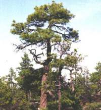
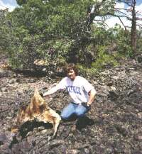
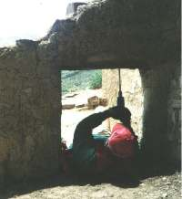

Photo provided by J.H. Speer |
Living tree sample: Chronology from living trees:
- Photo: Ponderosa pine in Oregon
- Known bark date (e.g., the present year) is starting point
- After crossdating samples from living trees, dendrochronology extends
back in time, e.g., AD 1500.
|

Photo provided by H.D. Grissino-Mayer |
Dead wood sample: Chronology from dead trees:
- Standing snags or fallen logs, like this ponderosa pine remnant in New Mexico
- Lived for a long time and died long ago
- If dead trees lived concurrently with the living tree chronology:
- Outer growth of dead trees crossdates with inner portions of living trees
- Dendrochronology extended further back in time, e.g., AD 1200.
|

Photo provided by H.D. Grissino-Mayer |
Dendroarcheological sample: Chronology from archeological samples:
- Wooden beams and uprights of ruins like the Tonto Ruin, Arizona
- If archeological samples lived concurrently with the dead wood chronology:
- Outer growth of structural samples crossdates with inner portions of dead trees
- Dendrochronology extended further back in time, e.g., AD 800
- Past human behavior reconstructed and analyzed
|